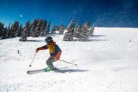
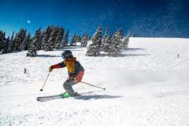

But there are more than just these games: you can diy your own masterpieces if you like to make something homemade OR it's a useful idea to bake and decorate the cookies/brownies 🍪 because indoor days are the perfect time to try and get creative in the kitchen.🥐 Whip up some kind of make-your-own dessert bar by putting out toppings (frosting, sprinkles, M&Ms). 🥜


And one of the funniest activity is DANCE!! Choose a playlist and move on the beat.💃

Others ideas are learn a new skill, make a puzzle, play with the science, read a book, make a hunt, play karaoke 🎤 or if you like video games, try a new and productive one!


You can start with basic sports, for example the next sports: volleyball 🏐, baseball 🏈, football 🥅, badminton 🎾, basketball 🏀, bowling 🎳, cycling , tennis 🏓. There are always a good choice and you can enjoy it with your friends because these sports require a larger group of people.

If you are more like an adventurous person 🤸 and you don't have the feeling to control the situation, a good outdoor activity is swimming 🏊, ice climbing, surfing 🌊, canoeing, skiing 🎿 etc.🏄
 

People inspire you, or they drain you - pick them wisely.